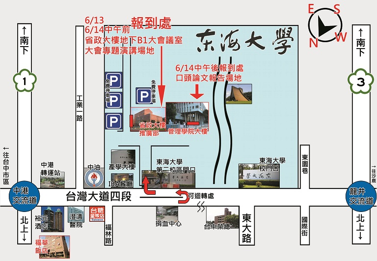

區塊1
區塊1的說明
col-sm-4的大小，在螢幕小於768px時會堆疊排列
區塊2
區塊2的說明
col-sm-4的大小，在螢幕小於768px時會堆疊排列
區塊3
區塊3的說明
col-sm-4的大小，在螢幕小於768px時會堆疊排列
按鈕組 + SlideUp/Down；col-xs-12會隨著螢幕縮小壓縮
X
- 研討會
海報 - 邀請卡
正反面 - 論文集
封面 - 論文集
光碟 - 立牌&
羅馬旗 - 研討會
地圖 - 研討會壁報
- 招生
海報

標籤頁1的內容區塊
這邊是col-md-4大小，隔壁是col-md-8
標籤頁區塊會在螢幕小於992px時堆疊在一起
標籤頁區塊會在螢幕小於568px時隱藏
標籤頁2的內容區塊
以下測試內容：
Make navs used as navigation accessible If you are using navs to provide a navigation bar, be sure to add a role="navigation" to the most logical parent container of the UL, or wrap a NAV element around the whole navigation.Do not add the role to the UL itself, as this would prevent it from being announced as an actual list by assistive technologies.
下拉式標籤頁1的內容區塊
下拉式標籤頁2的內容區塊
Panel標題區塊
Panel-body區塊
col-md-8的大小，隔壁是col-md-4的大小
| # | 標題1 | 標題2 |
| 1 | 列1欄1 | 列1欄2 |
| 2 | 列2欄1 | 列2欄2 |
iframe內框網頁；col-md-6
表格
| # | 欄1 | 欄2 | 欄3 |
| 列1 | 列1欄1 | 列1欄2 | 列1欄3 |
| 列2 | 列2欄1 | 列2欄2 | 列2欄3 |
| 列3 | 列3欄1 | 列3欄2 | 列3欄3 |
一些亂試
bootstrap警告框
媒體物件標題
媒體物件內文：ABCDEFG